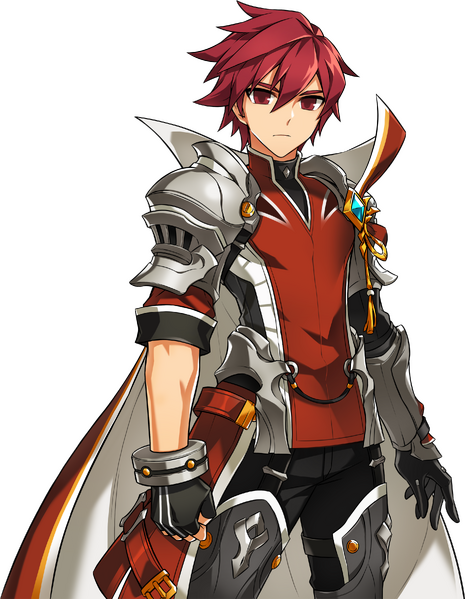
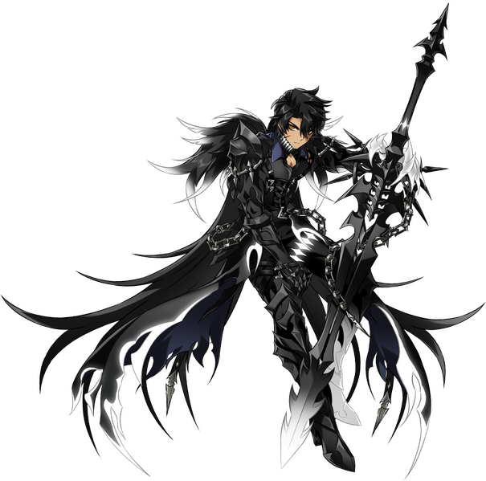
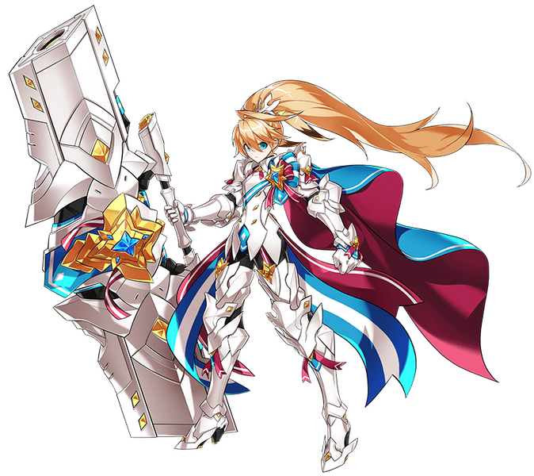
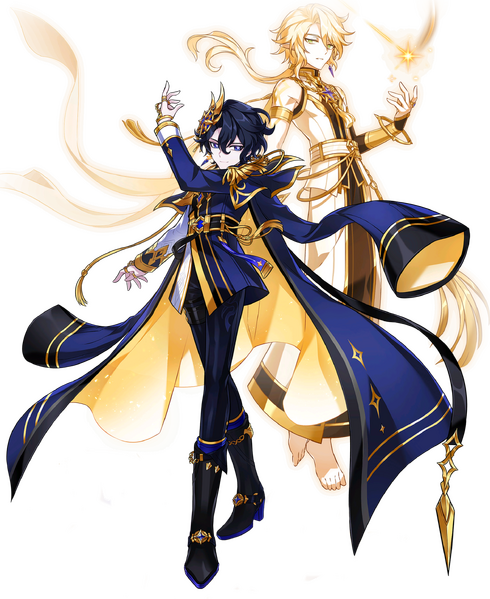
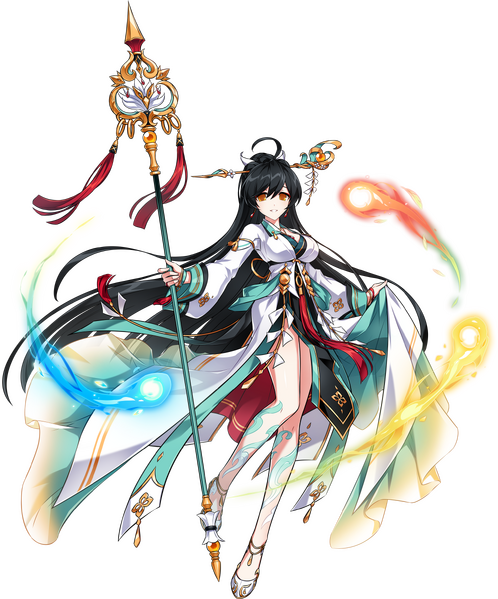
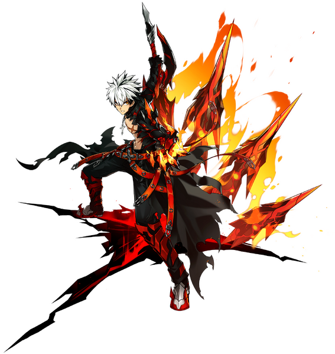

The Seraphims (Founding Duo)
The Guild Leader

_Xzenith5 (Guild Master): Whether we're optimizing raid composition or server politics, Xzenith keeps the guild clear and the energy high. He originally just wanted to make Elsword a casual game on his roster but ended up forming a strong bond with players that have the same passion as him.
Co-Leader

Vespera_5ive (Co-leader): Vespera is a co-leader for a reason. When Zenith is busy with other matters, Vespera is sure to deliver efficient leadership as Zenith. It is known that Zenith and Vespera were the first two people that thought of creating this guild.
Ophanims (Most Valuable Players)
Raid Lead & Tank

Kael_Thaw (Raid Leader / Main Tank): Kael stands strong in the frontlines and mains tank characters for the guild. He focuses on tanking the most damage and keeping the raid progression organized and efficient for everyone involved.
The Mastermind

PixiePounder (Buffer): Pixie specializes in breaking down patch notes, analyzing numerical data, and minmaxes items to increase the guild's overall combat power. Their goal is to help the guild understand shifts in the meta so members can improve their damage output.
Support Overseer

GloomGazer (Heal/Support): Gloom oversees the support roster of the guild, ensuring that buffs and defensive rotations are properly managed. With him, the guild has been through countless breakthrough raids with the perfect timing and synchronization of his support team.
PvP Warlord

FrostByte_TV (PvP Main): Frost organizes the guild's arena teams and competitive players. He facilitates practice sessions for members who want to refine their mechanical skills and improve their overall rank.
Each high-ranking official of Seraphim plays a crucial role in maintaining the guild's success and fostering a strong community of players. As such, they must be respected and held in high regard. Likewise, any misconduct by guild members will not be tolerated.
Our guild's ultimate goal is to support our guild members while keeping Elsword a fun and engaging game for everyone. This is made possible through the management and leadership of our dedicated officials. Moreover, we strive to create a positive and inclusive environment where all members can thrive and enjoy the game together.
If you are interested in joining this guild, click here!